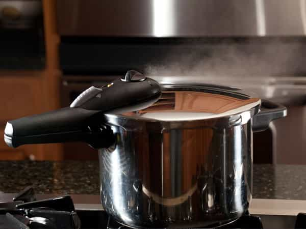
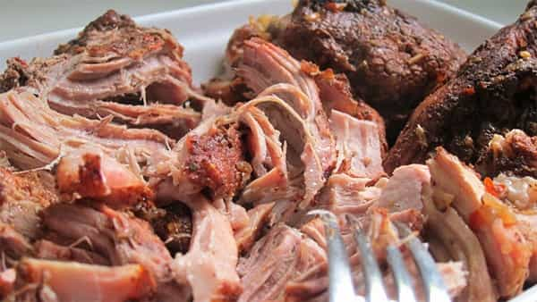
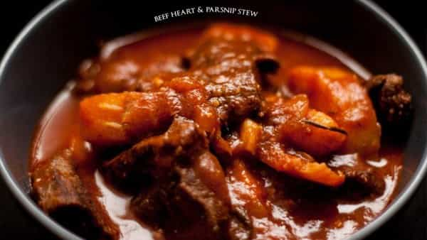

André is a young European who left his decaying country in 2012 for greener pastures. He enjoys exploring subterranean places, reading about a host of interconnected topics, and yearns for Tradition.


Far too many writers, marketers, promoters and other spinsters use the “changed my life” formula when they have something to promote. As a result, we tend to get cynical whenever someone says something changed his life. Yeah, sure—and how much is your fee?
But this time, it is true. A cooking utensil I had overlooked for years really did a lot for me recently. I was afraid of bulking on a budget before and now I can cook lots of cheap, yet nourishing and even tasty meat thanks to it.

Some foods can be consumed easily, sometimes immediately. A pack of bananas can be opened just after you checked out. A good ol’ T-bone can be minimally dressed, thrown on hot oil, flipped once or two and eaten cheerfully. Many foods, however, need time or work before they are ready to consume.
This is where the pressure cooker comes in. Instead of, say, letting your beans marinate in hot water during two hours, you can cook them in 40 minutes—and they will be better cooked after 40 minutes in the cooker than after thrice this time in hot water.
If you like having ready-to-cook supplies in the fridge, which is especially convenient when you don’t have time or patience to cook or nobody else to do it, if you want a healthy, high-protein diet on a budget, or if you’re simply tempted by a bit of gastronomic originality—which is highly seductive when you pull a girl into your lair—the pressure cooker might become the secret kitchen weapon you wouldn’t have thought of.
I’d only add two caveats. First, if you are living as a nomad, a big and thick saucepan may add unnecessary weight to your bags. On the other hand, most nomads are rather poor and being able to buy and cook the cheapest cuts can also be handy.
Second, unless you buy a fancy glass pressure cooker, you won’t be able to see how it’s going inside when you are using it and must guess how much water is still in there. If you stop cooking too soon, you will have to start the pressurization again, and if you stop too late the food may end up completely burned. Don’t worry, measuring the fairest time comes quickly with experience. In any case, it is better to stop cooking before it’s ready and start the process again than having it all charred.

Usually, the tastiest, easiest to cook animal parts are also the most expensive. To cook these you don’t need anything more than a classic pan. However, start exploring the cheapest meats available and what you’ll find are parts that need some work to be eaten.
Take, for example, pork shoulder. These bulky, yet cheap parts are commonly used to make pulled pork. Now you likely ate some pulled pork burger at least once in your life. Pubs serve them and sports fans love chomping on them while guzzling beer. But do you know how this tender, delicious pork is cooked?
Turning a piece of hard, dry meat into something that can be eaten without a knife takes time. Most pulled pork recipes out there say you should let your pork inside the oven for 6 to 10 hours before the meat pulls. The pressure cooker does this job much quicker: my first pulled pork was ready to eat in one hour and a half. Namely, one hour inside the cooker, then I gently pounded the meat to “pull” it, brushed it with a house-made sauce and let it half an hour in the oven.
This latter part was only so that the meat would absorb more sauce. Had I been in a hurry, the pork shoulder had already turned into a pulled pork after only one hour in the cooker and could have been consumed at this time—it would just have been a bit less tasty.
Another example: pork knuckle. Just like the pork shoulder this part is cheap and bulky. Recipes say you need at least two hours in the oven to cook it properly. Actually, knuckles are so dense than even after 2 hours of patience, when the external parts are all deliciously grilled, the most internal parts are still not fully cooked.
As you’ll have guessed, a better way to cook pork knuckle—a rather nourishing food that gives for 4 to 6 hearty servings—is through a nice session of pressure cooker.
There are a number of recipes, mostly revolving around sweet-and-sour preparations. My favourite one is the pork knuckle with pineapple. For this one you will need:
Start by washing the knuckle a bit. Peel the onion, cut it in two. Then put the entire, uncut knuckle, together with the stock, thyme, laurel, and the two parts of the onion into the pressure cooker. Let it cook for 45 minutes, starting to count when the vapour begins to escape from the top. (Make sure you have put enough stock or water inside the cooker.)
When the knuckle is getting cooked, peel the pineapple, cut it into thin pieces and disgorge them into a pan. Take their juice away, keep it in a glass, and let the pineapple pieces grill a bit. Do so with all pieces, in several times if necessary. Keep the grilled pieces apart.
Once the knuckle is properly cooked, take it away from the pressure cooker, cut it into pieces and brown them with butter on a frying pan. At the time all knuckle parts have become brown, add the pineapple pieces, the sauce that remains down the cooker, the pineapple juices and a bit more stock if necessary. Then you just have to let reduce until the liquid has turned into a sauce.
Trust me, it is tasty, even when you are not especially fond of sweet-and-sour recipes. I enjoy this one so much that my girlfriend asked me to stop doing it.

Now we’re venturing into the less usual. North Americans tend to have a stigma around offal meat. It is perceived as dirty or less desirable. The advantage of this is, offal pieces come usually much cheaper than even shoulders or knuckles. If you manage to get past the stigma, there are plenty of offal pieces you can feast on.
The supermarket near my place sells beef hearts. A single beef heart is 5.5-6 lbs. This makes for 6 to 12 servings, depending on the hunger and if you’re bulking. I tried to cook a beef heart without the pressure cooker, but then, even two hours and a half were not enough to do it properly. Only the pressure cooker managed to break the resistance of this thick, dense part. Note that beef hearts are so cheap that the mushrooms that come in this recipe are more expensive.
At this point, my stepmother—a seasoned practitioner of pressure cooking—made me find out that chicken feet could be eaten by humans, and that they were good, too. She lets entire chickens inside her pressure cooker, including the feet. I was a bit wary the first time, only to find out that these often thrown-away parts were actually good. Full of gristle, glucosamine and chondroitin, chicken feet can help those with chronic articulation problems. Do them in a stew or with some beans—and only serve them to girls you’ve already screwed if you don’t want to lose a potential notch.
Just like lightbulbs, food is usually deemed too trivial for paying attention. Ignoring the apparently trivial can be a mistake: acting locally on your surroundings does more for your life than advocating or arguing, and feeding well is a staple of living well. Pressure cooker use helped me to go Chris Pratt workout since I knew I could gorge on high-protein pulled pork or beef heart without breaking open the piggy bank. When you’ve got 4lbs of beef heart stew still left in the fridge, you know you can push a lot, get late at home and still go to bed unstressed.
Read Next: Why You Should Make Meals With A Slow-Cooker